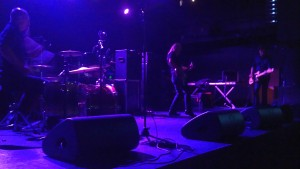
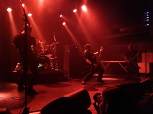

{kind=link}
Continuamos con nuestra crónica del Amplifest, desgranando los grupos que tocaron en el Hard Club el segundo día. Este día si que conseguimos ver a todos los grupos, así que no nos enrollamos más y vamos al lío.
L’Enfance Rouge
por tharandur
Los franceses L’Enfance Rouge tenían la complicada misión de comenzar el segundo día del festival, y su propuesta añadía un extra de dificultad a su tarea. Su rock disonante, ruidoso y lleno de cambios de ritmos se hace duro a la primera escucha, pero poco a poco consiguieron convencer a un público que iba llegando con cuentagotas. Se notaban que tenían bastantes tablas en directo, y se agradeció su entrega a pesar de la poca gente que empezó a verlos.
{kind=link}
Soldier Of The Road (documental)
por tharandur
De este documental sólo comentar que un servidor cuándo se asomó a ver qué pinta tenía, no había nadie sentado en las sillas que se habilitaron en la Sala 2 del Hard Club. Parece que el documental sobre el músico jazzero Peter Brötzmann no caló mucho en el público del Amplifest, que prefirió centrarse en L’Enfance Rouge y Enablers.
Enablers
por tharandur
{kind=link}
Después de L’Enfance Rouge, tocaba otra apuesta arriesgada: Enablers, que practican un noise rock potente, con ciertas influencias de bandas como Slint, acompañado de la voz de Pete Simonelli, dedicado a recitar en vez de a cantar. Instrumentalmente fueron soberbios, sin embargo el postureo continuo del cantante desconcentraba bastante. Está bien que un músico sienta su música, pero era tal el histrionismo del cantante que muchas veces rozaba el ridículo. Supongo que habría gente que le encantaría esta actitud (las caras de parte del público así lo reflejaba), pero a mí sólo consiguió aburrirme. Independientemente de esto, hay que reconocer que Enablers son una banda con un directo muy potente y con unos instrumentistas que son unos auténticos máquinas.
Witchburn
por tharandur
{kind=link}
En este concierto no me quedé mucho. Witchburn quizás fuese el grupo más típico del todo el festival, con un heavy/stoner que tiraba a sonidos demasiado hard rockeros para mis oídos. Vamos, que el concierto fue algo así como una lluvia de hachas. Un buen momento para descansar.
Bardo Pond
por tharandur
{kind=link}
Seguramente la gran sorpresa del festival. He de reconocer que no tenía muchas ganas de este concierto, porque en estudio (hasta ese momento) me aburrían. Suerte que decidí entrar al final en la Sala 1. Bardo Pond desplegaron su complicadísimo e intimista sonido con una maestría increíble. Su rock psicodélico nos envolvió y dejó a todo el público en trance, gracias a la impresionante calidad de sonido con la que contaron, que permitía apreciar todos los matices de sus composiciones. Un auténtico viaje que nos llevó por mil pasajes extraños, pero ciertamente bellos. Cuándo terminaron y rompieron el encantamiento de sus canciones, el público les dedicó una de las mayores ovaciones del festival. Grandísimos.
Dirge
por tharandur
{kind=link}
Salimos corriendo de Bardo Pond a ver a Dirge, banda post-metalera que beben directamente de bandas como Neurosis. Con un sonido realmente bueno (quizás los que mejor sonaron en la Sala 2) y con unas proyecciones de corte apocalíptico, sus composiciones sonaron atronadoras en los momentos duros, pero cristalinas y detalladas en los momentos más calmados (el público estuvo realmente respetuoso tanto en este concierto como en el resto). Hubiesen estado muy bien si su música no recordase tantísimo a Neurosis y es que, aunque no les falta calidad, andan bastante cortos en cuánto a originalidad.
Process Of Guilt
por AsbestosDeath
A las ocho y cuarto llegó el turno de los portugueses Process of Guilt, quienes, con la seguridad de los que juegan en casa, se subieron al escenario a descargar uno de los conciertos más potentes y arrolladores del festival. Desde el momento en que el vocalista Hugo Santos dio comienzo al set con un inhumano alarido gutural (fue además uno de los pocos conciertos donde la voz se oyó tan alta como debería), Process of Guilt arrollaron al público con un death/doom denso como una francesinha especial, que al mismo tiempo recuerda a los mejores clásicos de este género como posée un sonido y una identidad muy propios y muy actuales. En opinión del que suscribe, uno de los mejores conciertos del festival.
{kind=link}
Barn Owl
por AsbestosDeath
{kind=link}
Cuando, media hora después del comienzo de su concierto, nos dirigimos a ver al dúo de drone americano Barn Owl, descubrimos que actuaban ante un público invitado a sentarse no sólo en las sillas dispuestas en la sala por la organización, sino también en cualquier resquicio de suelo que quede libre. Quienes encontraron sitio pudieron disfrutar de una propuesta cercana a la de los últimos Earth, aunando el drone y el ambient con toques folk y una dosis propia de psicodelia. Barn Owl inundaron la sala con una marea de sonidos guitarreros y unas voces altamente reverberadas y sostenidas durante largos minutos mediante el uso de loops, y crearon el ambiente idóneo para quienes, sentados en el suelo, quisieran cerrar los ojos y dejarse llevar.
Acid Mothers Temple & The Melting Paraiso U.F.O.
por tharandur
{kind=link}
Los japoneses Acid Mothers Temple (con la coletilla The Melting Paraiso U.F.O) eran otro de los grandes nombres del festival, ya que son unos de los grandes nombres de la psicodelia contemporánea. Con una Sala 1 relativamente llena durante una hora maravillaron al personal con sus improvisaciones, centradas, mayormente, en torno a su tema Pink Lady Lemonade. Es díficil resumir con palabras un concierto tan lleno de pequeñas excéntricas genialidades, pero recomiendo su directo totalmente, siempre que vayas con la idea de que lo de estos chicos es psicodelia en estado puro, haciendo que otras bandas cómo The Mars Volta parezcan casi normales.
Orthodox
por AsbestosDeath
{kind=link}
Orthodox fueron otros que tuvieron un horario complicado, atrapados entre el final de la actuación de Acid Mothers Temple e inmediatamente antes del plato fuerte de todo el festival, Godflesh en persona. No obstante esto no fue detrimento para que aquellos que quisieran acercarse a la sala pudieran disfrutar de un concierto sobresaliente donde Orthodox, sumergidos en un ambiente cargado de humo y bañados por una infernal luz roja, desgranaron un repertorio potente y variado, donde además de dar un buen repaso a los temas de su último album Baal también tuvieron tiempo para colar temas como Matse Avatar del 7’’ homónimo, o Heritage, del split a cuatro bandas Four Burials, antes de cerrar por todo lo alto con la épica Hani Ba’al y El Lamento del Cabrón, corte sacado de su album debut Gran Poder, dedicado a modo de bis a un público que pese a la proximidad de Godflesh (la cola en la otra sala empezaba a hacerse ya grande), se resistía a irse antes de tiempo.
Godflesh
por Txomin
{kind=link}
Jesu era la banda que más me atraía del festival, pero tenía claro que nadie iba a poder competir con el concierto que Godflesh darían. En directo, la virtud de uno es el defecto del otro, y si bien achaqué demasiada monocromía sonora en Jesu, la rabia y crudeza que Broadrick, Green y su caja de ritmos descargaron en la Sala 1 del Hard Club los encumbró como la carne de dios que se hacen llamar. Oro Puro. Puta Crema.
Irrumpieron con Like Rats para descargar casi todo su Streetcleaner, discutiblemente su mejor álbum, pero indudablemente ideal para ser ejecutado sin un batería «de verdad». Se sucedían clásicos como Christbait Rising, Streetcleaner o Mighty Trust Krusher. Incluso cayeron Life is easy y Avalanche Master Song, compuestas en la época de gestación de la banda, con Paul Neville y bajo el nombre de Fall of Because.
La densidad de los primeros temas dio paso a una segunda parte de concierto algo más bailonga pero igualmente arrolladora. Dead Head, Spite o Pure hacían las delicias de los presentes que, con un calor en aumento, descargaban su violencia contra la valla de contención. Tras un pequeño descanso los de Birmingham volvieron con dos bises, Slavestate y Crush my soul. Cierre sobresaliente de un concierto sobresaliente, a pesar de tener olvidada toda su discografía a partir del Songs of Love and Hate.
Ya para cerrar, recomendar encarecidamente este festival a cualquier persona que le interese los estilos de música que abarca el Amplifest. La organización estuvo de 10, Oporto es una ciudad muy bonita y barata, dónde se come genial (francesinhas FTW) y la acústica de las salas del Hard Club es sobresaliente. Íbamos con muchas expectativas a este festival, y estas quedaron totalmente superadas.
Apoyános